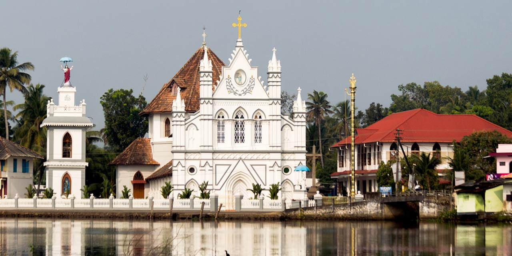

Alappuzha
Known as the ‘Venice of the East’ Alleppey is a tourist destination where nature’s green is gold, its beauty will blaze bright to soothe your eyes and delight your soul.
Quaint villages, paddy fields and tranquil backwaters are the richest bounties of Alappuzha. Thousands of tourists from all over the world come to Alleppey to enjoy the beauty of this tropical paradise. This Venetian capital of Kerala is the first choice of Honeymooners as the scenic charm, coconut groves, azure lagoons and amazing backwaters have a dream-like quality to spend some moments of togetherness. It is one of the most amazing tourist destinations to visit in Kerala.
Alappuzha Beach
Alappuzha beach is one of the most popular tourist attractions in Alleppey. Less crowded, scenic, serene and enchanting, Alappuzha Beach will make your beach holidays one of the best to remember. Dense palm groves and soul soothing serenity of the park nearby, freshwater rivers and Scenic Arabian Sea is just a perfect need to spend some moments in peace.here is also a 150-year-old Alappuzha Lighthouse, which you should not miss while enjoying the beauty of Alappuzha Beach.

St. Mary’s Forane Church
St. Mary Forane Church is one of the most popular places to visit in Alleppey. It is the oldest catholic church in Kerala. This church dates back to 835 AD and it got the status of a Forane in 1929.It is dedicated to Virgin Mary. Ancient stones with engravings and Thaliyola in the ‘Nanam Moonam’ alphabet will take you back to ancient times.Moreover,there are some of the oldest, artistic,historic and archaeological objects in granite, wood metal like Granite cross, Altar, Bells, etc.